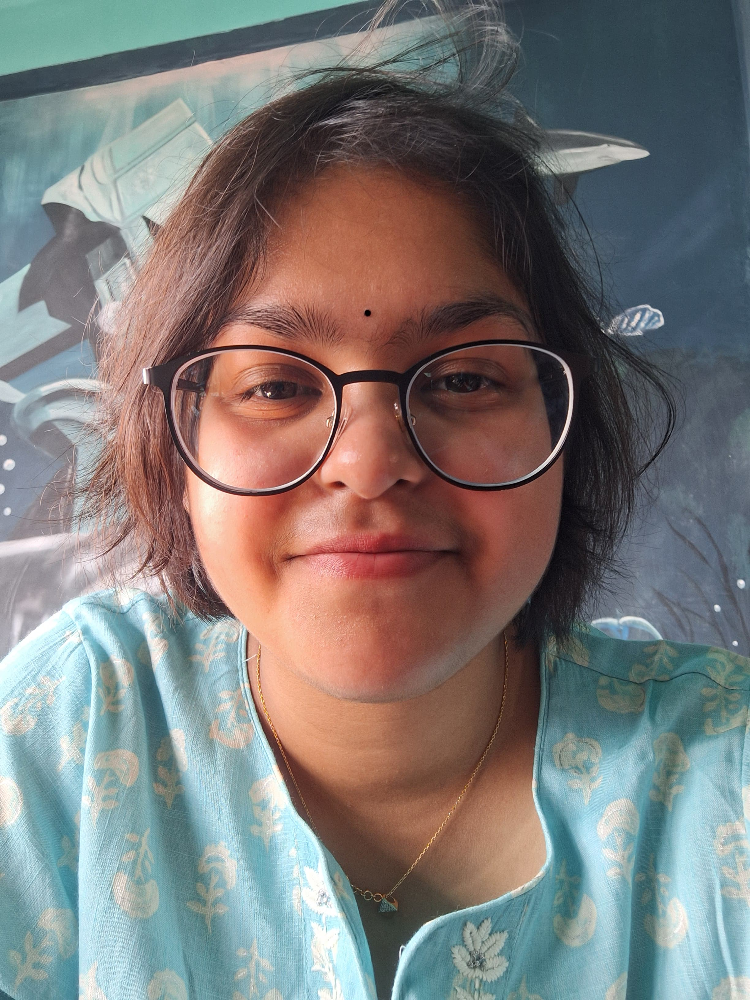

Kashyapi Dutta

Guwahati| Phone no: 7099099066
Email: kashyapidutta4@gmail.com
Dedicated, energetic and motivated team player willing to make use of existing skills and experience while enabling future personal and professional development.
EDUCATION
- Currently in year: 2024 (3rd year)
BTech in Computer Science and Engineering: Assam Science and Technology University
- Year of Completion: 2022
High School: Shrimanta Shankar Academy
- Year of Completion: 2020
Matriculation: Shrimanta Shankar Academy
SKILLS
- Good Communication skills
- Adaptability
- Creativity
- Time Management
- Fluent in spoken and Written English
ACCOMPLISHMENTS/ ACHIEVEMENTS
- Earned state and national certifications in Table Tennis. Continuously represented my state in the national level from 2016 to 2022, validating expertise and commitment to continuous learning.
HOBBIES
- Reading
- Sports
- Creative Writing
- Crocheting
CERTIFICATION
Successfully completed social internship under Indian RedCross Society undertaking Human Health and Hygiene as the topic during the summer of 2023.
Interned at Tezpur University in the summer of 2024 on the topic: "Prediction of heart diseases using Machine Learning techniques".
Completing a one-month internship at Prodigy Infotech undertaking five different web devlopment tasks showcasing my abilities in the month of July, 2024.
TECHNICAL SKILLS
- Python
- Basics of C and C++
- HTML
About me
Contact me